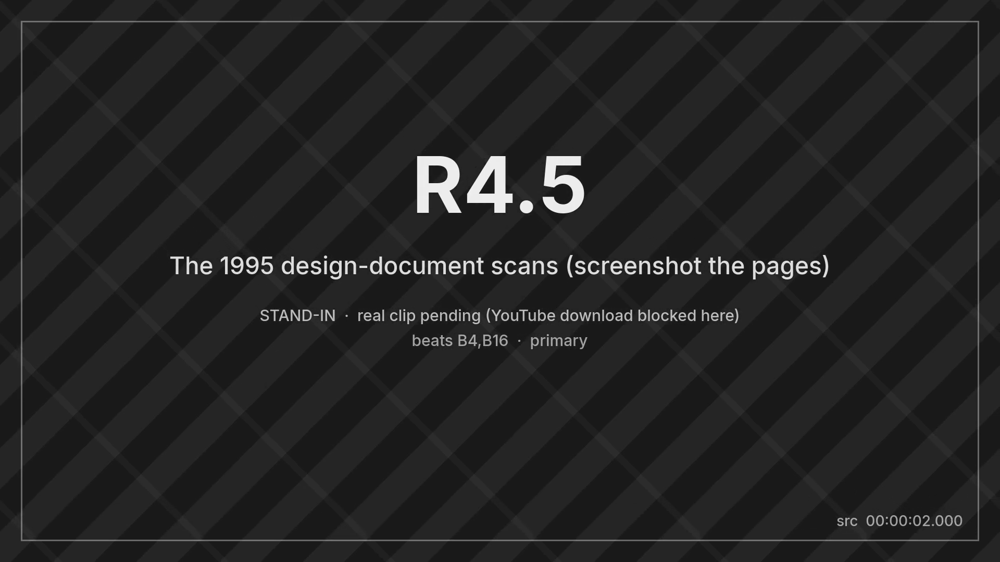

Why does
L4: 4x3 tiles, 40 px blur (media treatment, k 1.76), 10% white, 1 px border 20%. Seeded clears, 3f each: f3 12 21 30 39 48. Push 100->104%.
L3 3x2, 8 px gutters: pops 4f (96->100% + fade), 3f apart from f78. f126 cell 6 switches to R17.1 and fills the frame over 6f, ease out (f132).
They ram.
They chase.
They don't let go.
L3 strips (634.67 px): one per phrase f168 / f186 / f204, pop 4f + footage punch-in 100->115% over 4f, ease out; T4 phrase on the same frame.
TEXT CELL
L3: a cell may stay black (the ink-black ground) and hold text (.rc-l3__celltext); it pops like the others.
L5 #E9E9E9: framed clip (8 px white border, shadow 0 12 30 black 25%, -4 deg) + cut-out stand-in (8 px outline + same shadow, +4 deg); float +/-6 px, 2 s a leg.
GRAND
THEFT
AUTO
GTA 1 intro, 1997
L6: clip at 62% (1190.4 x 669.6), 2 px white border, 30 px warm glow #FFF6E0 40%; back copy 50 px blur + 40% darker (treatment); T6 between. Push 100->104%.

L7 (still, under 1.5 s): #0A0A0A at 65% (picture at 35%) with a rounded hole, 20 px feather; push 100->118% about the hole centre.
L7 on footage (B15 arcade): dim 35% except the box on the target; slow push 100->118% across the shot.
L11 (B5): two 958 px halves, 4 px black divider (x 958-962). Left cop side R5.4, right chased car R5.1.
L11 B6 "dull" (colour TEST PATTERN): saturation -1 treatment, intensity 0->1 over 6f from f660; rate lane 1 -> 0.5 over the same 6f.
L11 B11 flip: rotateY 0->180 over 10f (f720-f730, power2.inOut), treatment blur peaks at f725; back face = R10.2 | R5.4.
DMA Design
The studio behind Lemmings
L12: 12 px white borders, -6 / +3 / -2 deg, drop in from above 8f each, ease out (f783, f791, f799 -> lands f807); parallax drift 8/16/24 px.
2001
2002
2004
2008
2013
inside the L2 band
L10 tag: Inter Medium 22 px, white, soft shadow at (96, 54), 6f per clip. Then L2 band box y 138-942 (bars here are a demo stand-in for Tesseract's).

Calibration: edge (top) + 4 px line (bottom) through the L4 blur copy (k 1.76, 31.0-31.5) and the L6 back copy (k 2.2, 31.5-32.0).